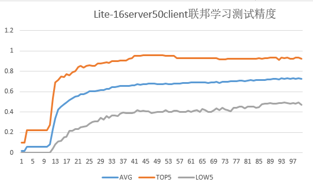

Implementing an Image Classification Application (x86)

Before you start, check whether MindSpore has been correctly installed. If not, install MindSpore on your computer by referring to Install on the MindSpore website.
Downloading the Dataset
You can refer to LEAF: A Benchmark for Federated Settings.
In this example, the federated learning dataset FEMNIST in the leaf dataset is used. The dataset contains 62 different types of handwritten digits and letters (digits 0 to 9, lowercase letters, and uppercase letters). The image size is 28 x 28 pixels, the dataset contains handwritten digits and letters of 3500 users (a maximum of 3500 clients can be simulated to participate in federated learning). The total data volume is 805,263, the average data volume of each user is 226.83, and the variance of the data volume of all users is 88.94.
Ensure that the following environment requirements are met:
numpy==1.16.4 scipy # conda install scipy tensorflow==1.13.1 # pip install tensorflow Pillow # pip install Pillow matplotlib # pip install matplotlib jupyter # conda install jupyter notebook==5.7.8 tornado==4.5.3 pandas # pip install pandas
Download the dataset generation script from GitHub:
git clone https://github.com/TalwalkarLab/leaf.git
After the project is downloaded, the directory structure is as follows:
leaf-master/data/femnist ├── data # Generated dataset ├── preprocess # Code related to data preprocessing ├── preprocess.sh # Shell script for generating the `femnist` dataset └── README.md # Official dataset download guide
Take the
femnistdataset as an example. Run the following command to go to the specified path:cd leaf-master/data/femnist
According to the description in the
README.mdfile, run the command on the device to download the corresponding dataset.Run the
./preprocess.shscript. The options are as follows:-s: The value ‘iid’ indicates that data is sampled in iid mode. The value ‘niid’ indicates that data is sampled in niid mode.--iu: indicates the number of users (if iid sampling is performed). It is the fraction of the total number of users. The default value is 0.01.--sf: indicates the data to be sampled, in decimal number. The default value is 0.1.-k: indicates the minimum number of samples for each user.-t: The value ‘user’ indicates that users are divided into training test groups. The value ‘sample’ indicates that samples of each user are divided into training test groups.--tf: indicates the data in the training dataset, in decimal number. The default value is 0.9.--smplseed: indicates the seed to be used before random data sampling.--spltseed: indicates the seed to be used before random data splits.
Examples:
./preprocess.sh -s niid --sf 1.0 -k 0 -t sample: downloads a complete dataset../preprocess.sh -s niid --sf 0.05 -k 0 -t sample: downloads a small dataset.
Before running the preprocess.sh script again, ensure that the rem_user_data, sampled_data, test, and train subfolders are deleted from the data directory.
For example, run the command
./preprocess.sh -s niid --sf 1.0 -k 0 -t sampleto generate a dataset containing data of 3500 users, and split data of each user into a training dataset and a test dataset at 9:1.The directory structure is as follows:
leaf-master/data/femnist/35_client_sf1_data/ ├── all_data # All datasets are mixed together. There are 35 JSON files in total, and each JSON file contains the data of 100 users. ├── test # Test dataset obtained after splitting the data of each user into the training and test datasets at 9:1. There are 35 JSON files in total, and each JSON file contains the data of 100 users. ├── train # Test dataset obtained after splitting the data of each user into the training and test datasets at 9:1. There are 35 JSON files in total, and each JSON file contains the data of 100 users. └── ... # Other files are not involved and are not described here.
Each JSON file consists of the following parts:
users: user list.num_samples: sample quantity list of each user.user_data: a dictionary object with the username as the key and their data as the value. For each user, the data is represented as an image list, and each image is represented as an integer list whose size is 784 (obtained by flattening the 28 x 28 image array).
Split 35 JSON files into 3500 JSON files (each JSON file represents a user).
The sample code is as follows:
import os import json def mkdir(path): if not os.path.exists(path): os.mkdir(path) def partition_json(root_path, new_root_path): """ partition 35 json files to 3500 json file Each raw .json file is an object with 3 keys: 1. 'users', a list of users 2. 'num_samples', a list of the number of samples for each user 3. 'user_data', an object with user names as keys and their respective data as values; for each user, data is represented as a list of images, with each image represented as a size-784 integer list (flattened from 28 by 28) Each new .json file is an object with 3 keys: 1. 'user_name', the name of user 2. 'num_samples', the number of samples for the user 3. 'user_data', an dict object with 'x' as keys and their respective data as values; with 'y' as keys and their respective label as values; Args: root_path (str): raw root path of 35 json files new_root_path (str): new root path of 3500 json files """ paths = os.listdir(root_path) count = 0 file_num = 0 for i in paths: file_num += 1 file_path = os.path.join(root_path, i) print('======== process ' + str(file_num) + ' file: ' + str(file_path) + '======================') with open(file_path, 'r') as load_f: load_dict = json.load(load_f) users = load_dict['users'] num_users = len(users) num_samples = load_dict['num_samples'] for j in range(num_users): count += 1 print('---processing user: ' + str(count) + '---') cur_out = {'user_name': None, 'num_samples': None, 'user_data': {}} cur_user_id = users[j] cur_data_num = num_samples[j] cur_user_path = os.path.join(new_root_path, cur_user_id + '.json') cur_out['user_name'] = cur_user_id cur_out['num_samples'] = cur_data_num cur_out['user_data'].update(load_dict['user_data'][cur_user_id]) with open(cur_user_path, 'w') as f: json.dump(cur_out, f) f = os.listdir(new_root_path) print(len(f), ' users have been processed!') # partition train json files partition_json("leaf-master/data/femnist/35_client_sf1_data/train", "leaf-master/data/femnist/3500_client_json/train") # partition test json files partition_json("leaf-master/data/femnist/35_client_sf1_data/test", "leaf-master/data/femnist/3500_client_json/test")
In the preceding command,
root_pathis set toleaf-master/data/femnist/35_client_sf1_data/{train,test}, andnew_root_pathis set to a user-defined value to store the generated 3500 JSON files. The training and test folders need to be processed separately.A total of 3500 JSON files are generated. Each file contains the following parts:
user_name: username.num_samples: number of user samples.user_data: a dictionary object that uses ‘x’ as the key and user data as the value; uses ‘y’ as the key and the label corresponding to the user data as the value.
If the following information is displayed, the script is successfully executed:
======== process 1 file: /leaf-master/data/femnist/35_client_sf1_data/train/all_data_16_niid_0_keep_0_train_9.json====================== ---processing user: 1--- ---processing user: 2--- ---processing user: 3--- ---processing user: 4--- ---processing user: 5--- ---processing user: 6--- ---processing user: 7--- ---processing user: 8--- ---processing user: 9--- ---processing user: 10--- ---processing user: 11--- ---processing user: 12--- ---processing user: 13--- ---processing user: 14--- ......
Convert the JSON file to an image file.
For details, see the following code:
import os import json import numpy as np from PIL import Image name_list = ['0', '1', '2', '3', '4', '5', '6', '7', '8', '9', 'A', 'B', 'C', 'D', 'E', 'F', 'G', 'H', 'I', 'J', 'K', 'L', 'M', 'N', 'O', 'P', 'Q', 'R', 'S', 'T', 'U', 'V', 'W', 'X', 'Y', 'Z', 'a', 'b', 'c', 'd', 'e', 'f', 'g', 'h', 'i', 'j', 'k', 'l', 'm', 'n', 'o', 'p', 'q', 'r', 's', 't', 'u', 'v', 'w', 'x', 'y', 'z' ] def mkdir(path): if not os.path.exists(path): os.mkdir(path) def json_2_numpy(img_size, file_path): """ read json file to numpy Args: img_size (list): contain three elements: the height, width, channel of image file_path (str): root path of 3500 json files return: image_numpy (numpy) label_numpy (numpy) """ # open json file with open(file_path, 'r') as load_f_train: load_dict = json.load(load_f_train) num_samples = load_dict['num_samples'] x = load_dict['user_data']['x'] y = load_dict['user_data']['y'] size = (num_samples, img_size[0], img_size[1], img_size[2]) image_numpy = np.array(x, dtype=np.float32).reshape(size) # mindspore doesn't support float64 and int64 label_numpy = np.array(y, dtype=np.int32) return image_numpy, label_numpy def json_2_img(json_path, save_path): """ transform single json file to images Args: json_path (str): the path json file save_path (str): the root path to save images """ data, label = json_2_numpy([28, 28, 1], json_path) for i in range(data.shape[0]): img = data[i] * 255 # PIL don't support the 0/1 image ,need convert to 0~255 image im = Image.fromarray(np.squeeze(img)) im = im.convert('L') img_name = str(label[i]) + '_' + name_list[label[i]] + '_' + str(i) + '.png' path1 = os.path.join(save_path, str(label[i])) mkdir(path1) img_path = os.path.join(path1, img_name) im.save(img_path) print('-----', i, '-----') def all_json_2_img(root_path, save_root_path): """ transform json files to images Args: json_path (str): the root path of 3500 json files save_path (str): the root path to save images """ usage = ['train', 'test'] for i in range(2): x = usage[i] files_path = os.path.join(root_path, x) files = os.listdir(files_path) for name in files: user_name = name.split('.')[0] json_path = os.path.join(files_path, name) save_path1 = os.path.join(save_root_path, user_name) mkdir(save_path1) save_path = os.path.join(save_path1, x) mkdir(save_path) print('=============================' + name + '=======================') json_2_img(json_path, save_path) all_json_2_img("leaf-master/data/femnist/3500_client_json/", "leaf-master/data/femnist/3500_client_img/")
If the following information is displayed, the script is successfully executed:
=============================f0644_19.json======================= ----- 0 ----- ----- 1 ----- ----- 2 ----- ----- 3 ----- ----- 4 ----- ----- 5 ----- ----- 6 ----- ----- 7 ----- ----- 8 ----- ----- 9 ----- ----- 10 ----- ......
Convert the image dataset into a .bin file format available to the federated learning framework.
For details, see the following code:
import numpy as np import os import mindspore.dataset as ds import mindspore.dataset.transforms.c_transforms as tC import mindspore.dataset.vision.py_transforms as PV import mindspore.dataset.transforms.py_transforms as PT import mindspore def mkdir(path): if not os.path.exists(path): os.mkdir(path) def count_id(path): files = os.listdir(path) ids = {} for i in files: ids[i] = int(i) return ids def create_dataset_from_folder(data_path, img_size, batch_size=32, repeat_size=1, num_parallel_workers=1, shuffle=False): """ create dataset for train or test Args: data_path: Data path batch_size: The number of data records in each group repeat_size: The number of replicated data records num_parallel_workers: The number of parallel workers """ # define dataset ids = count_id(data_path) mnist_ds = ds.ImageFolderDataset(dataset_dir=data_path, decode=False, class_indexing=ids) # define operation parameters resize_height, resize_width = img_size[0], img_size[1] # 32 transform = [ PV.Decode(), PV.Grayscale(1), PV.Resize(size=(resize_height, resize_width)), PV.Grayscale(3), PV.ToTensor(), ] compose = PT.Compose(transform) # apply map operations on images mnist_ds = mnist_ds.map(input_columns="label", operations=tC.TypeCast(mindspore.int32)) mnist_ds = mnist_ds.map(input_columns="image", operations=compose) # apply DatasetOps buffer_size = 10000 if shuffle: mnist_ds = mnist_ds.shuffle(buffer_size=buffer_size) # 10000 as in LeNet train script mnist_ds = mnist_ds.batch(batch_size, drop_remainder=True) mnist_ds = mnist_ds.repeat(repeat_size) return mnist_ds def img2bin(root_path, root_save): """ transform images to bin files Args: root_path: the root path of 3500 images files root_save: the root path to save bin files """ use_list = [] train_batch_num = [] test_batch_num = [] mkdir(root_save) users = os.listdir(root_path) for user in users: use_list.append(user) user_path = os.path.join(root_path, user) train_test = os.listdir(user_path) for tag in train_test: data_path = os.path.join(user_path, tag) dataset = create_dataset_from_folder(data_path, (32, 32, 1), 32) batch_num = 0 img_list = [] label_list = [] for data in dataset.create_dict_iterator(): batch_x_tensor = data['image'] batch_y_tensor = data['label'] trans_img = np.transpose(batch_x_tensor.asnumpy(), [0, 2, 3, 1]) img_list.append(trans_img) label_list.append(batch_y_tensor.asnumpy()) batch_num += 1 if tag == "train": train_batch_num.append(batch_num) elif tag == "test": test_batch_num.append(batch_num) imgs = np.array(img_list) # (batch_num, 32,3,32,32) labels = np.array(label_list) path1 = os.path.join(root_save, user) mkdir(path1) image_path = os.path.join(path1, user + "_" + "bn_" + str(batch_num) + "_" + tag + "_data.bin") label_path = os.path.join(path1, user + "_" + "bn_" + str(batch_num) + "_" + tag + "_label.bin") imgs.tofile(image_path) labels.tofile(label_path) print("user: " + user + " " + tag + "_batch_num: " + str(batch_num)) print("total " + str(len(use_list)) + " users finished!") root_path = "leaf-master/data/femnist/3500_client_img/" root_save = "leaf-master/data/femnist/3500_clients_bin" img2bin(root_path, root_save)
If the following information is displayed, the script is successfully executed:
user: f0141_43 test_batch_num: 1 user: f0141_43 train_batch_num: 10 user: f0137_14 test_batch_num: 1 user: f0137_14 train_batch_num: 11 user: f0049_32 test_batch_num: 1 user: f0049_32 train_batch_num: 11 user: f0178_39 test_batch_num: 1 user: f0178_39 train_batch_num: 9 user: f0222_06 test_batch_num: 1 user: f0222_06 train_batch_num: 9 ...... total 3500 users finished!
The 3500_clients_bin folder contains 3500 user folders. The directory structure is as follows:
leaf-master/data/femnist/3500_clients_bin ├── f0000_14 # User ID. │ ├── f0000_14_bn_10_train_data.bin # Training data of user f0000_14 (The number 10 following bn_ indicates the batch number.) │ ├── f0000_14_bn_10_train_label.bin # Training label of user f0000_14. │ ├── f0000_14_bn_1_test_data.bin # Test data of user f0000_14 (The number 1 following bn_ indicates the batch number.) │ └── f0000_14_bn_1_test_label.bin # Training label of user f0000_14. ├── f0001_41 # User ID. │ ├── f0001_41_bn_11_train_data.bin # Training data of user f0001_41 (The number 11 following bn_ indicates the batch number.) │ ├── f0001_41_bn_11_train_label.bin # Training label of user f0001_41. │ ├── f0001_41_bn_1_test_data.bin # Test data of user f0001_41 (The number 1 following bn_ indicates the batch number.) │ └── f0001_41_bn_1_test_label.bin # Test label of user f0001_41. │ │ │ ... │ │ └── f4099_10 # User ID. ├── f4099_10_bn_4_train_data.bin # Training data of user f4099_10 (The number 4 following bn_ indicates the batch number.) ├── f4099_10_bn_4_train_label.bin # Training label of user f4099_10. ├── f4099_10_bn_1_test_data.bin # Test data of user f4099_10 (The number 1 following bn_ indicates the batch number.) └── f4099_10_bn_1_test_label.bin # Test label of user f4099_10.
Defining the Network
The LeNet network is relatively simple. In addition to the input layer, the LeNet network has seven layers, including two convolutional layers, two down-sample layers (pooling layers), and three full connection layers. Each layer contains different numbers of training parameters, as shown in the following figure:

For details about the LeNet network, visit http://yann.lecun.com/exdb/lenet/.
For the network defining process, see the model.py.
For more details, see the MindSpore Image Classification Task.
Defining the Training Process
For details, see the following code:
import argparse
import numpy as np
import mindspore.context as context
import mindspore.nn as nn
from mindspore import Tensor
from mindspore.nn import TrainOneStepCell, WithLossCell
from src.model import LeNet5
from src.adam import AdamWeightDecayOp
parser = argparse.ArgumentParser(description="test_fl_lenet")
parser.add_argument("--device_target", type=str, default="CPU")
parser.add_argument("--server_mode", type=str, default="FEDERATED_LEARNING")
parser.add_argument("--ms_role", type=str, default="MS_WORKER")
parser.add_argument("--worker_num", type=int, default=0)
parser.add_argument("--server_num", type=int, default=1)
parser.add_argument("--scheduler_ip", type=str, default="127.0.0.1")
parser.add_argument("--scheduler_port", type=int, default=8113)
parser.add_argument("--fl_server_port", type=int, default=6666)
parser.add_argument("--start_fl_job_threshold", type=int, default=1)
parser.add_argument("--start_fl_job_time_window", type=int, default=3000)
parser.add_argument("--update_model_ratio", type=float, default=1.0)
parser.add_argument("--update_model_time_window", type=int, default=3000)
parser.add_argument("--fl_name", type=str, default="Lenet")
parser.add_argument("--fl_iteration_num", type=int, default=25)
parser.add_argument("--client_epoch_num", type=int, default=20)
parser.add_argument("--client_batch_size", type=int, default=32)
parser.add_argument("--client_learning_rate", type=float, default=0.1)
parser.add_argument("--scheduler_manage_port", type=int, default=11202)
args, _ = parser.parse_known_args()
device_target = args.device_target
server_mode = args.server_mode
ms_role = args.ms_role
worker_num = args.worker_num
server_num = args.server_num
scheduler_ip = args.scheduler_ip
scheduler_port = args.scheduler_port
fl_server_port = args.fl_server_port
start_fl_job_threshold = args.start_fl_job_threshold
start_fl_job_time_window = args.start_fl_job_time_window
update_model_ratio = args.update_model_ratio
update_model_time_window = args.update_model_time_window
fl_name = args.fl_name
fl_iteration_num = args.fl_iteration_num
client_epoch_num = args.client_epoch_num
client_batch_size = args.client_batch_size
client_learning_rate = args.client_learning_rate
scheduler_manage_port = args.scheduler_manage_port
ctx = {
"enable_fl": True,
"server_mode": server_mode,
"ms_role": ms_role,
"worker_num": worker_num,
"server_num": server_num,
"scheduler_ip": scheduler_ip,
"scheduler_port": scheduler_port,
"fl_server_port": fl_server_port,
"start_fl_job_threshold": start_fl_job_threshold,
"start_fl_job_time_window": start_fl_job_time_window,
"update_model_ratio": update_model_ratio,
"update_model_time_window": update_model_time_window,
"fl_name": fl_name,
"fl_iteration_num": fl_iteration_num,
"client_epoch_num": client_epoch_num,
"client_batch_size": client_batch_size,
"client_learning_rate": client_learning_rate,
"scheduler_manage_port": scheduler_manage_port
}
context.set_context(mode=context.GRAPH_MODE, device_target=device_target, save_graphs=False)
context.set_fl_context(**ctx) # Sets parameters related to the federated learning training process.
if __name__ == "__main__":
epoch = 5
np.random.seed(0)
network = LeNet5(62)
criterion = nn.SoftmaxCrossEntropyWithLogits(sparse=True, reduction="mean")
net_opt = nn.Momentum(network.trainable_params(), 0.01, 0.9)
net_adam_opt = AdamWeightDecayOp(network.trainable_params(), weight_decay=0.1)
net_with_criterion = WithLossCell(network, criterion)
train_network = TrainOneStepCell(net_with_criterion, net_opt)
train_network.set_train()
losses = []
for _ in range(epoch):
data = Tensor(np.random.rand(32, 3, 32, 32).astype(np.float32))
label = Tensor(np.random.randint(0, 61, (32)).astype(np.int32))
loss = train_network(data, label).asnumpy()
losses.append(loss)
print(losses)
In the dictionary ctx, the enable_fl parameter is used to set whether to start the federated learning training process. If the value is true, the federated learning process is started. If the value is false, the common training process is started. Other parameters can be set based on the actual situations. Only available model files need to be generated. In the preceding script, data and label use the simulation data.
In the preceding information, src.model is the model definition file. For details, see the model.py file. src.adam is the optimizer definition file. For details, see the adam.py file.
For details about the definition of the optimizer loss function, see the MindSpore official document.
Generating a Device Model File
Export a model as a MindIR file.
You can add the
exportstatement to the training process code in model.py to obtain the MindIR model file. The sample code is as follows:from mindspore import export ... ... ... for _ in range(epoch): data = Tensor(np.random.rand(32, 3, 32, 32).astype(np.float32)) label = Tensor(np.random.randint(0, 61, (32)).astype(np.int32)) loss = train_network(data, label).asnumpy() losses.append(loss) mindir_name = "lenet_train.mindir" export(train_network, data, label, file_name= mindir_name, file_format='MINDIR') # Add the export statement to obtain the model file in MindIR format. print(losses)
When generating a MindIR format model file, you need to comment the statement
context.set_fl_context(**ctx)in the model.py file, and setepochto 1. Runningmodel.pyrequires MindSpore to be installed in the environment . The filelenet_train.mindirwill be generated in the current path after running the scriptmodel.py.For details, see here.
Convert the MindIR file into an .ms file that can be used by the federated learning framework on the device.
For details about model conversion, see Training Model Conversion Tutorial.
The following is an example of model conversion:
Assume that the model file to be converted is
lenet_train.mindir. Run the following command:./converter_lite --fmk=MINDIR --trainModel=true --modelFile=lenet_train.mindir --outputFile=lenet_train
If the conversion is successful, the following information is displayed:
CONVERTER RESULT SUCCESS:0
This indicates that the MindSpore model is successfully converted to the MindSpore device model and the new file
lenet_train.msis generated. If the conversion fails, the following information is displayed:CONVERT RESULT FAILED:
Save the generated model file in
.msformat to a path. When the federated learning API is called, FLParameter.trainModelPath can be set to the path of the model file.
Simulating Multi-client Participation in Federated Learning
You can write a Python script to call the JAR package of the federated learning framework. (For details about how to obtain the JAR package in the x86 environment, see Building a Package in the Federated-Client deployment tutorial.
Take the Lenet network as an example. The reference script
run.pyis as follows:import os import argparse import subprocess import random parser = argparse.ArgumentParser(description="Run TestClient.java case") parser.add_argument("--jarPath", type=str, default="mindspore-lite-java-flclient.jar") # must be absolute path parser.add_argument("--train_dataset", type=str, default="leaf-master/data/femnist/3500_clients_bin/") # must be absolute path parser.add_argument("--test_dataset", type=str, default="null") # must be absolute path parser.add_argument("--vocal_file", type=str, default="null") # must be absolute path parser.add_argument("--ids_file", type=str, default="null") # must be absolute path parser.add_argument("--flName", type=str, default="lenet") parser.add_argument("--train_model_path", type=str, default="ms/lenet/") # must be absolute path of .ms files parser.add_argument("--infer_model_path", type=str, default="ms/lenet/") # must be absolute path of .ms files parser.add_argument("--ip", type=str, default="10.113.216.106") parser.add_argument("--ssl", type=str, default="false") parser.add_argument("--port", type=int, default=6668) parser.add_argument("--server_num", type=int, default=0) parser.add_argument("--client_num", type=int, default=0) parser.add_argument("--time_window", type=int, default=6000) parser.add_argument("--use_elb", type=str, default="false") parser.add_argument("--use_https", type=str, default="false") parser.add_argument("--cert_path", type=str, default="null") parser.add_argument("--task", type=str, default="train") args, _ = parser.parse_known_args() jarPath = args.jarPath train_dataset = args.train_dataset test_dataset = args.test_dataset vocal_file = args.vocal_file ids_file = args.ids_file flName = args.flName train_model_path = args.train_model_path infer_model_path = args.infer_model_path ip = args.ip ssl = args.ssl port = args.port server_num = args.server_num client_num = args.client_num time_window = str(args.time_window) use_elb = args.use_elb use_https = args.use_https cert_path = args.cert_path task = args.task users = os.listdir(train_dataset) def get_client_data_path(data_root_path, user): use_path = os.path.join(data_root_path, user) bin_file_paths = os.listdir(use_path) train_data_path = "" train_label_path = "" train_batch_num = "" test_data_path = "" test_label_path = "" test_batch_num = "" for file in bin_file_paths: info = file.split(".")[0].split("_") if info[4] == "train" and info[5] == "data": train_data_path = os.path.join(use_path, file) train_batch_num = info[3] elif info[4] == "train" and info[5] == "label": train_label_path = os.path.join(use_path, file) elif info[4] == "test" and info[5] == "data": test_data_path = os.path.join(use_path, file) test_batch_num = info[3] elif info[4] == "test" and info[5] == "label": test_label_path = os.path.join(use_path, file) train_path = train_data_path + "," + train_label_path test_path = test_data_path + "," + test_label_path return train_path, test_path, train_batch_num, test_batch_num for i in range(client_num): clientID = "f"+str(i) user = users[i] train_path, test_path = "", "" train_path, test_path, _, _= get_client_data_path(train_dataset, user) print("===========================") print("client id: ", clientID) print("train path: ", train_path) print("test path: ", test_path) cmd_client = "execute_path=$(pwd) && self_path=$(dirname \"${script_self}\") && " cmd_client += "rm -rf ${execute_path}/client_" + str(i) + "/ &&" cmd_client += "mkdir ${execute_path}/client_" + str(i) + "/ &&" cmd_client += "cd ${execute_path}/client_" + str(i) + "/ || exit &&" cmd_client += "java -jar " cmd_client += jarPath + " " cmd_client += train_path + " " cmd_client += vocal_file + " " cmd_client += ids_file + " " cmd_client += test_path + " " cmd_client += flName + " " cmd_client += train_model_path + "lenet_train" + str(i) + ".ms" + " " print("model path: ", train_model_path + "lenet_train" + str(i) + ".ms" + " ") cmd_client += infer_model_path + "lenet_train" + str(i) + ".ms" + " " print("model path: ", infer_model_path + "lenet_train" + str(i) + ".ms" + " ") cmd_client += clientID + " " cmd_client += ip + " " cmd_client += ssl + " " cmd_client += str(port) + " " cmd_client += time_window + " " cmd_client += use_elb + " " cmd_client += str(server_num) + " " cmd_client += use_https + " " cmd_client += cert_path + " " cmd_client += task + " " cmd_client += " > client" + ".log 2>&1 &" subprocess.call(['bash', '-c', cmd_client])
The input parameters in the run.py script are described as follows and can be set based on the actual situations:
Absolute paths must be provided for the following paths:
--jarPathSpecifies the path of the federated learning JAR package. For details about how to obtain the JAR package in the x86 environment, see Building a Package in the Federated-Client deployment tutorial.
--train_datasetSpecifies the root path of the training dataset.The sentiment classification task stores the training data (in .txt format) of each client. The LeNet image classification task stores the training files data.bin and label.bin of each client, for example,
leaf-master/data/femnist/3500_clients_bin/.--test_datasetSpecifies the test dataset path. For LeNet image classification tasks, this parameter does not need to be set and the default value is null. For sentiment classification tasks, if this parameter is not set, validation is not performed during training.
--vocal_fileSpecifies the path of the dictionary file for data preprocessing. Set the value to null for LeNet, or set the value to the actual absolute path for the sentiment classification task.
--ids_fileSpecifies the path of the dictionary mapping ID. Set the value to null for LeNet, or set the value to the actual absolute path for the sentiment classification task.
--flNameSpecifies the name of the federated learning model. Currently, only
lenet(using the LeNet for image classification tasks) andalbert(using the Albert network for sentiment classification tasks) are supported.--train_model_pathSpecifies the training model path used for federated learning. The path is the directory where multiple .ms files copied in the preceding tutorial are stored, for example,
ms/lenet. The path must be an absolute path.--infer_model_pathSpecifies the path of the inference model used by federated learning. It is the absolute path of the model file in .ms format. This parameter is mandatory for sentiment classification tasks, and can be set to the value of train_model_path for LeNet image classification tasks.
--ipSpecifies the IP address of the server. The format is 10.113.216.106. Currently, the cloud supports only the HTTP communication mode. The HTTP communication mode is used by default.
--sslDetermines whether to perform SSL certificate authentication for device-cloud communication. SSL certificate authentication is used only for HTTPS communication. If this parameter is set to false, SSL certificate authentication is not performed. If this parameter is set to true, SSL certificate authentication is performed only in HTTPS communication mode. In this case,
useHttpsmust be set to true, andcert_pathmust be set to a specific certificate path. The default value is false.--portSpecifies the port number. The value must be the same as the value of the
fl_server_portparameter used when the server is started. The format is 6668.--time_windowSpecifies the total time window for repeated requests on the device. The value must be the same as the sum of
start_fl_job_time_windowsandupdate_model_time_windowswhen the server is started.--server_numSpecifies the number of servers. The value must be the same as the value of
server_numwhen the server is started. This parameter is used to simulate the scenario where the client randomly selects different servers to send messages. This parameter is not required in actual scenarios.--client_numSpecifies the number of clients. The value must be the same as that of
start_fl_job_cntwhen the server is started. This parameter is not required in actual scenarios.--use_elbApplies to the multi-server scenario. If the value is true, each round request of the client uses a random port within the specified range. If the value is false, a fixed port is used. The default value is false. If the value of
server_numis greater than 1, set this parameter to true. Simulates a client to randomly select different servers to send messages. This parameter is not required in actual scenarios.--use_httpsDetermines whether to perform HTTPS communication for device-cloud communication. The value false indicates that HTTP communication is performed. The value true indicates that HTTPS communication is performed. The default value is false.
--cert_pathSpecifies the absolute path of the certificate. This parameter is mandatory when
--sslis set to true. The default value isnull.--taskSpecifies the type of the task to be started.
trainindicates that a training task is started.inferenceindicates that multiple data inference tasks are started.getModelindicates that the task for obtaining the cloud model is started. Other character strings indicate that the inference task of a single data record is started. The default value istrain. The initial model file (.ms file) is not trained. Therefore, you are advised to start the training task first. After the training is complete, start the inference task. (Note that the values of client_num in the two startups must be the same to ensure that the model file used byinferenceis the same as that used bytrain.)
Prepare a model file for the client.
In the actual scenario, a client contains a model file in .ms format. In the simulation scenario, you need to copy multiple .ms files and name them in
lenet_train{i}.msformat. In the format, i indicates the client ID. Due to the script settings inrun.py, i must be set to a number, such as0, 1, 2, 3, 4, 5.... Each client uses an .ms file.You can copy and name the original .ms file by referring to the following steps:
import shutil import os def copy_file(raw_path,new_path,copy_num): # Copy the specified number of files from the raw path to the new path for i in range(copy_num): file_name = "lenet_train" + str(i) + ".ms" new_file_path = os.path.join(new_path, file_name) shutil.copy(raw_path ,new_file_path) print('====== copying ',i, ' file ======') print("the number of copy .ms files: ", len(os.listdir(new_path))) if __name__ == "__main__": raw_path = "lenet_train.ms" new_path = "ms/lenet" num = 5 copy_file(raw_path, new_path, num)
Set
raw_pathto the path of the original .ms file,new_pathto the path of the .ms file to be copied, andnumto the number of copies. Generally, you need to simulate the number of started clients.For example, in the preceding script, the .ms file is generated in the
ms/lenetdirectory for five clients. The directory structure is as follows:ms/lenet ├── lenet_train0.ms # .ms file used by client 0. ├── lenet_train1.ms # .ms file used by client 1. ├── lenet_train2.ms # .ms file used by client 2. ├── lenet_train3.ms # .ms file used by client 3. └── lenet_train4.ms # .ms file used by client 4.
Start the client.
Before starting the client, please refer to the section x86 in the Federated-Client deployment tutorial for deployment of device environment .
Run
run.pyas follows:python run.py --ip=10.113.216.106 --port=6668 --server_num=8 --client_num=5 --task=train
This command indicates that five clients are started to participate in federated learning. If the startup is successful, log files corresponding to the five clients are generated in the current folder. You can view the log files to learn the running status of each client.
./ ├── client_0 │ └── client.log # Log file of client 0. ├── client_1 │ └── client.log # Log file of client 1. ├── client_2 │ └── client.log # Log file of client 2. ├── client_3 │ └── client.log # Log file of client 3. └── lenet_train4.ms └── client.log # Log file of client 4.
Stop the client process.
For details, see the
finish.pyscript. The details are as follows:import os import argparse import subprocess parser = argparse.ArgumentParser(description="Finish test_mobile_lenet.py case") parser.add_argument("--kill_tag", type=str, default="mindspore-lite-java-flclient") args, _ = parser.parse_known_args() kill_tag = args.kill_tag cmd = "pid=`ps -ef|grep " + kill_tag cmd += " |grep -v \"grep\" | grep -v \"finish\" |awk '{print $2}'` && " cmd += "for id in $pid; do kill -9 $id && echo \"killed $id\"; done" subprocess.call(['bash', '-c', cmd])
Run the following command to shut down the client:
python finish.py --kill_tag=mindspore-lite-java-flclient
The parameter
--kill_tagis used to search for the keyword to kill the client process. You only need to set the special keyword in--jarPath. The default value ismindspore-lite-java-flclient, that is, the name of the federated learning JAR package.Assume that five clients are started and each client contains a Python process and a Java process. The following information is displayed if the clients are successfully shut down:
killed 56427 killed 56432 killed 56435 killed 56444 killed 56449 killed 56451 killed 56452 killed 56461 killed 56465 killed 56474
That is, 10 processes are successfully killed.
View the experimental result.
Currently, the
3500_clients_binfolder contains data of 3500 clients. This script can simulate a maximum of 3500 clients to participate in federated learning.The following figure shows the accuracy of the test dataset for federated learning on 50 clients (set
server_numto 16).
The total number of federated learning iterations is 100, the number of epochs for local training on the client is 20, and the value of batchSize is 32.
The test accuracy in the figure refers to the accuracy of each client test dataset on the aggregated model on the cloud for each federated learning iteration:
AVG: average accuracy of 50 client test datasets
TOP5: average accuracy of the five clients with the highest accuracy in the test dataset
LOW5: average accuracy of the five clients with the lowest accuracy in the test dataset